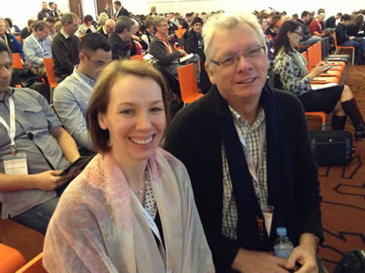
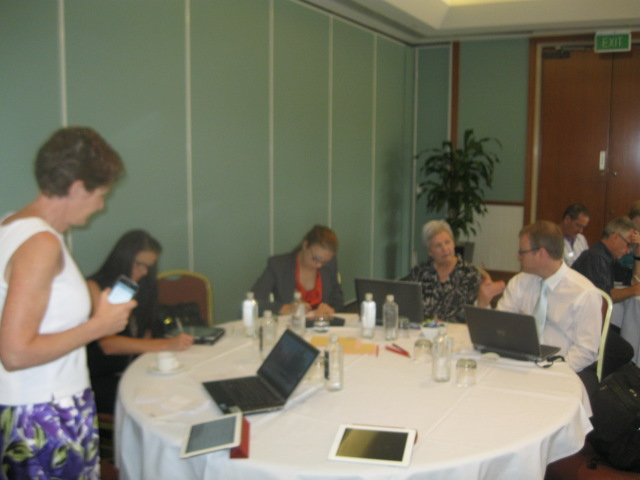

Richard Jones lives and works in New Zealand.
My Detailed Bio
eLearning Consultant, Pirongia, New Zealand
July 2013 – present
- PHP and web developer, created Moodle plugins and ran a Development course for HRDNZ, Moodle partner for several years.
- eLearning design, Moodle and Articulate Storyline for Safety 'n Action and other clients
- Completed Managing the Moodle School
- Collaborating with HRDNZ and Academic Tribe on projects for RMIT, NZQA, Chisolm TAFE and Geneva Health.
- Developing online workshops for the European Bank for Reconstruction and Development
- Completed Certificate in Facilitating and Designing eLearning with Open Polytechnic
August 2008 – January 2010
- Designing, developing and running Online PD workshops for the IBO
- Senior examiner for IBO, examination papers, principal moderator
Director of eLearning, The Southport School, Australia
February 2010 – June 2013
- Responsible for setting up and administering Moodle and Mahara
- Responsible for staff PL in Educational Technology
- Managing Australian Government Quality Teaching Programme funded projects on ePortfolios, Staff Professional Learning and eLearning Leaders
- Strategic development of blended learning classroom pedagogy
Head of ICT, Dulwich College Beijing, Beijing, China
August 2006 – July 2008
- Setting up and developing the Virtual Learning Centre (Moodle LMS).
- Chair of the ICT strategic committee.
- Teaching Key Stages 3 and 4 and staff training.
- Adult Leader, Rotary Interact Club.
- Led student/staff/parent trip to build houses for Tabitha Cambodia in November 2007.
e-Learning Manager, Te Wananga o Aotearoa, Auckland, New Zealand
October 2004 – April 2006 Seconded to Te Tauihu o Nga Wananga as Project Manager, Resource Center,
- Designed structure, content of resource centre
- Ran training workshops for Tertiary educators
- Designing workflow for digital repository (DSpace)
- Preparation of online e-learning material (Moodle)
October 2004 to June 2005: Following secondment:
- Integrating the Resource Centre into the Wananga Development Plan.
- Responsibility for management of e-Learning application (Moodle LMS).
- Associated course development/transition to e-Learning.
- Evaluation of e-Learning capability.
- Developing Level 4 and Online Education certificate programs.
e-Learning Manager, Auckland International College, 85 Airedale Street Auckland, New Zealand
July 2003 – June 2005
- Responsible for developing the new IB Computer Science course.
- Teaching the ICT course to pre-IB students.
- Designed and developed support websites for students
- Specifying college e-learning platforms, admin package; development of reporting and assessment resources (Crystal Reports).
- Auditing and developing staff ICT training needs.
- Oversaw student-led Local and Global Activities fundraising and services group
- Part-time after January 2005.
Visiting Lecturer, Dept of Computer Science, University of Waikato Hamilton, New Zealand
July 2002 – July 2003
- Lecturing first and second year courses in computer programming (C++), systems architecture and digital electronics.
- Designed and developed support websites for above courses.
- Responsible for further developing the 7th form scholarship program.
Teacher i/c Lower School Computing, United World College of South East Asia, Singapore
August 1998 – June 2002
- Teaching IT in Grades 5 and 8, Electronics in Grades 6 and 7, IGCSE Computing in Grades 9 and 10, IB Computer Science in Grades 11 and 12. Outstanding external examination results.
- Responsible for curriculum development of IT in Lower School.
- Led Staff Training sessions in the use of IT.
- Led student expeditions to Southern Riau, Indonesia & Northern Thailand.
Director of Computing Services, St Julian’s School, Portugal
September 1989 –July 1998
- Teaching keyboard skills in Years 3 – 6, IT in Years 7 - 9, GCSE Computing in Years 10 and 11, IB *Computer Science and ITGS in Grades 12 and 13. Invited to become IB Examiner on strength of examination results.
- Responsible for all computer specification and purchasing in the school.
- Responsible for integration of IT into the middle school curriculum subject areas in line with the English National Curriculum requirements. Judged a success by ECIS accreditation team.
- Responsible for staff training in IT and set up the financially successful Cambridge IT adult training program.
- Chair of the Staff Association for 3 years, conducted critical salary negotiations with the board during a difficult period.
- Designed and developed the school’s networked Administration Database.
Researcher, Nat Lab Industrial Engineering and Technology, Portugal
August 1986 – August 1989
- Research/computer programming of mathematical models of fluidized bed combustion. Several peer-reviewed publications on this topic.
- Responsible to Director for EEC hydrocarbon project evaluations
- Utility/systems programming tasks.
Self-employed
August 1985 – July 1986
- Advertising copy (Commercial Union Insurance, TAP Air Portugal)
- Tutoring
- Technical report translation: Portuguese-English
Chief Geophysicist, Atlantic Resources Lda, Portugal
February 1982 – July 1985
- Working with the World Bank to promote West African prospects
- Seismic survey field supervision Senegal, Guinea Bissau
- Geophysical/seismic interpretation and mapping
- Technical report translation: French-English
Geophysical Consultant, Atlas Geophysical Consultants, UK
September 1980 – January 1982
Geophysical Consultant, Southern Geophysical Consultants, UK
July 1977- August 1980
- Working as a client representative on marine seismic surveys
- Worked for all of the oil majors at one time or another
- Worked North Sea, Western Approaches, Grand Banks, Hudsons Bay, West Africa, East Africa, Mediterranean, Taranaki, Venezuala, S China Sea
QC Seismologist, Geophysical Service International, UK
July 1974 – June 1976
- First real job out of college.

Presenting at the Sydney Moot

At the 2013 Melbourne Moot with Dr Jill.

Jo Inglis and colleagues at one of our Big Day's Out - Radisson Resort Gold Coast.